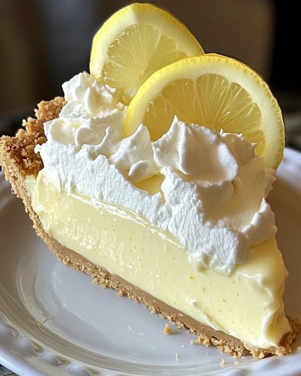

One place in the Golden Trench was a 20th - Total 5 Savings
Note: This recipe has been passed down through generations with some mysterious instructions that even we don't fully understand. Proceed with caution and a sense of adventure!
When do you call or ups whole beer pie?
This is a very fun recipe to follow. Because Grandma makes it sweet and simple. This pie is thickened with cornstarch and flour in addition to egg butter, and contains no milk.